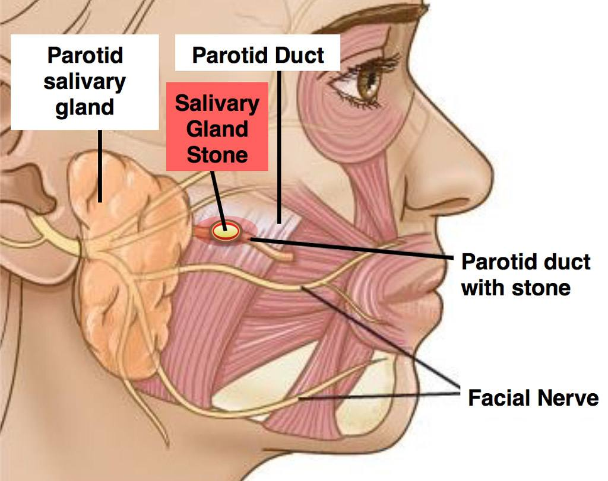
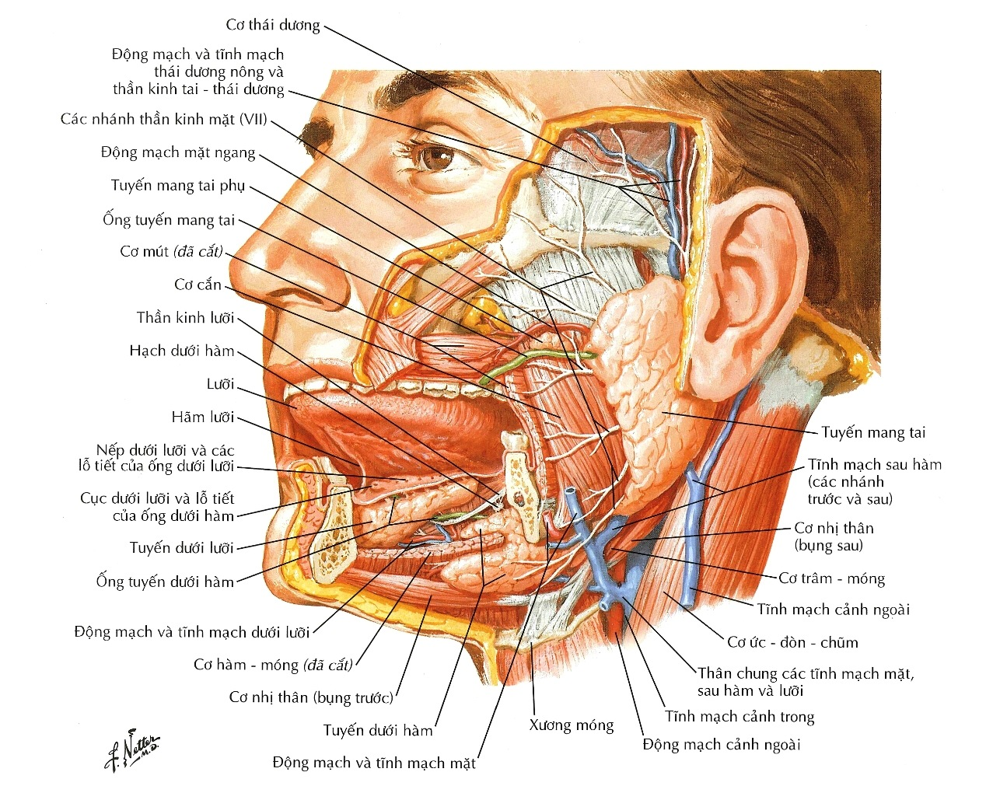
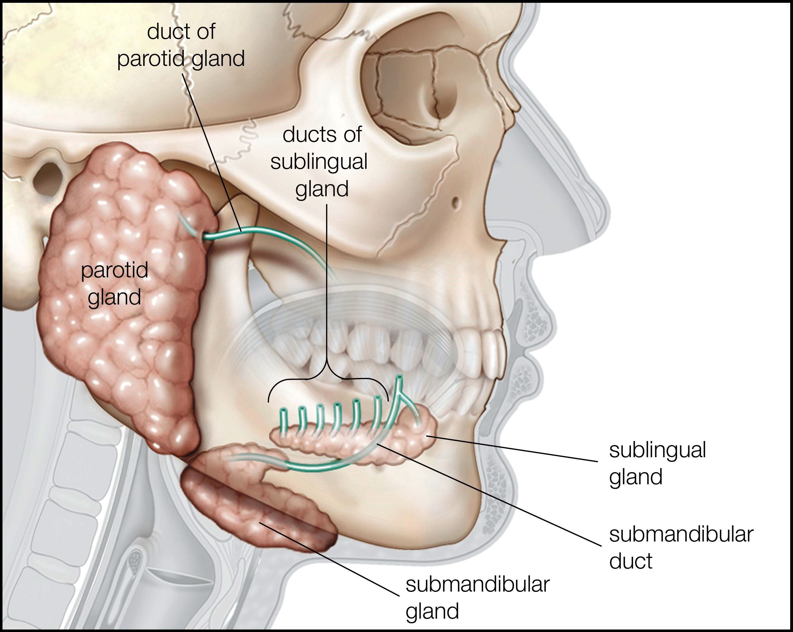
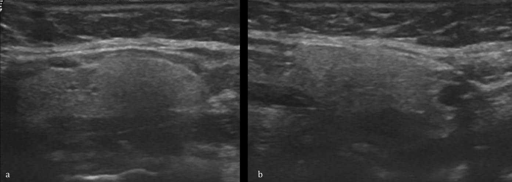

Sỏi Tuyến Nước Bọt
I. Đại cương
– Sỏi tuyến nước bọt (sialolithiasis) là tình trạng hình thành sỏi trong hệ thống ống bài xuất của tuyến nước bọt; sỏi chủ yếu chứa các muối khoáng giàu calci và có thể gây tắc nghẽn một phần hoặc hoàn toàn ống tuyến.
– Dịch tễ: Sỏi tuyến nước bọt là nguyên nhân thường gặp nhất gây tắc nghẽn tuyến nước bọt:
+ Bệnh chủ yếu gặp ở người trưởng thành, thường ở tuổi trung niên.
+ Phân bố theo giới thay đổi giữa các quần thể, chưa ghi nhận ưu thế nhất quán.
– Căn nguyên: Chưa xác định rõ, có thể đa yếu tố; viêm, bất thường hệ thống ống tuyến và giảm lưu lượng hoặc ứ trệ nước bọt được đề xuất là các yếu tố thuận lợi.
– Cơ chế bệnh sinh: Cơ chế hình thành chưa được làm sáng tỏ hoàn toàn:
+ Dòng nước bọt chậm hoặc ứ trệ có thể thúc đẩy sự kết tinh, lắng đọng khoáng chất và tăng kích thước sỏi.
+ Sỏi gây tắc dòng nước bọt, làm tăng ứ đọng và gây viêm tuyến.
– Biểu hiện lâm sàng:
+ Sưng đau tuyến tái diễn, thường xuất hiện hoặc tăng khi ăn do tăng tiết nước bọt gặp cản trở bài xuất.
+ Tắc nghẽn kéo dài có thể gây viêm tuyến tái phát hoặc nhiễm trùng thứ phát.
– Vị trí: Khoảng 80% sỏi khu trú trong hệ thống ống tuyến dưới hàm; phần lớn số còn lại ở tuyến mang tai, còn sỏi tuyến dưới lưỡi và tuyến phụ hiếm gặp.
– Vai trò CĐHA: Giúp phát hiện, xác định số lượng và vị trí sỏi, đánh giá tình trạng tắc nghẽn hoặc giãn ống tuyến và biến đổi thứ phát của nhu mô tuyến.


© Chẩn Đoán Hình Ảnh Xray.vn
II. Giải phẫu
Có 3 tuyến nước bọt chính nằm xung quanh xương hàm dưới và nhiều tuyến nước bọt phụ phân bố khắp khoang miệng như ở lưỡi, khẩu cái, môi, má…
* Tuyến mang tai
– Vị trí: Tuyến mang tai nằm trước tai, sau ngành xương hàm dưới và trước cơ ức đòn chũm. Thùy nông phủ mặt ngoài ngành xương hàm dưới và phần sau cơ cắn; thùy sâu kéo dài vào khoang cạnh hầu.
– Phân chia thùy: Thân và các nhánh dây thần kinh mặt đi qua tuyến, tạo mặt phẳng quy ước phân chia thùy nông và thùy sâu; giữa hai thùy không có vách ngăn giải phẫu rõ.
* Tuyến dưới hàm
– Tuyến dưới hàm nằm trong tam giác dưới hàm, dưới thân xương hàm dưới. Phần sâu của tuyến vòng qua bờ sau tự do cơ hàm móng để vào sàn miệng. Các hạch dưới hàm nằm quanh tuyến, ngoài bao tuyến.
– Động mạch mặt thường chạy sát mặt sau hoặc mặt sâu của tuyến, đôi khi đi trong nhu mô. Tĩnh mạch mặt thường nằm nông hơn tuyến; động mạch và tĩnh mạch lưỡi nằm phía trong tuyến.
– Ống bài xuất tuyến dưới hàm (ống Wharton) xuất phát từ rốn hoặc phần sâu của tuyến, vòng qua bờ sau tự do cơ hàm móng rồi chạy ra trước ở sàn miệng, phía trong tuyến dưới lưỡi. Thần kinh lưỡi bắt chéo ống từ ngoài vào trong. Ống mở tại nhú dưới lưỡi, hai bên hãm lưỡi. Ống bình thường không giãn; có thể quan sát được một phần trên siêu âm nhưng không phải lúc nào cũng thấy rõ.
– Khảo sát phần sâu và bờ sau của tuyến có thể bị hạn chế do cửa sổ âm. Sau xạ trị vùng cổ, hồi âm, cấu trúc nhu mô và bờ tuyến có thể thay đổi.
* Tuyến dưới lưỡi
– Tuyến dưới lưỡi nằm trong khoang dưới lưỡi, phía trên cơ hàm móng, phía ngoài cơ cằm móng và cơ cằm lưỡi; mặt ngoài tuyến áp sát mặt trong xương hàm dưới.
– Trên mặt cắt ngang, tuyến có hình bầu dục; trên mặt cắt song song với thân xương hàm dưới, tuyến có hình thuôn dài, dạng thấu kính.
– Tuyến có nhiều ống bài xuất nhỏ (ống Rivinus) đổ dọc theo nếp dưới lưỡi. Ống lớn nhất (ống Bartholin) có thể đổ vào ống Wharton hoặc mở riêng gần nhú dưới lưỡi.


* Lỗ đổ tuyến nước bọt
– Tuyến mang tai: ống Stensen (Stenon) đổ vào tiền đình miệng qua nhú tuyến mang tai ở niêm mạc má, đối diện răng cối lớn thứ hai hàm trên.
– Tuyến dưới hàm: ống Wharton mở tại nhú dưới lưỡi, ở sàn miệng, hai bên hãm lưỡi.
– Tuyến dưới lưỡi: các ống nhỏ Rivinus đổ dọc theo nếp dưới lưỡi. Ống lớn Bartholin có thể đổ riêng gần nhú dưới lưỡi hoặc thông với ống Wharton.


III. Chẩn đoán siêu âm
* Giải phẫu siêu âm
– Tuyến dưới hàm
+ Nằm dưới thân xương hàm dưới, trong tam giác dưới hàm, giữa bụng trước và bụng sau cơ hai bụng. Phần sâu của tuyến vòng qua bờ sau tự do cơ hàm móng và có thể thấy lan vào sàn miệng.
+ Nhu mô tuyến thường đồng nhất, tăng âm nhẹ đến rõ so với các cơ vùng cổ. Độ hồi âm thay đổi tùy lượng mỡ trong tuyến. Khảo sát tuyến ở mặt cắt ngang và dọc, đồng thời so sánh với bên đối diện.
+ Cơ hàm móng là mốc quan trọng để nhận diện phần sâu của tuyến. Động mạch mặt có thể nằm sát hoặc đi trong nhu mô; Doppler màu giúp nhận diện mạch máu và phân biệt với các cấu trúc dạng ống khác.
+ Ống Wharton bình thường thường không giãn và khó quan sát trên siêu âm. Khi thấy ống giãn, có thể lần theo ống về phía trước để xác định vị trí tắc.


=> Case lâm sàng 1:


– Tuyến mang tai:
+ Mốc siêu âm: Tĩnh mạch sau hàm thường nằm sâu hơn dây thần kinh mặt và có thể dùng làm mốc gián tiếp để ước định mặt phẳng phân chia thùy nông và thùy sâu. Tương quan giữa tĩnh mạch và thần kinh có biến thể, vì vậy đây không phải mốc tuyệt đối để xác định vị trí tổn thương so với dây thần kinh mặt.
+ Nhu mô tuyến thường đồng nhất, tăng âm nhẹ đến rõ so với cơ vùng cổ; mức hồi âm thay đổi theo lượng mô mỡ trong tuyến.


=> Case lâm sàng 1:


– Hạch nội tuyến: Có thể thấy hạch ở các cực trên và dưới, đa số nằm ở thùy nông; hạch thường có hình bầu dục hoặc thuôn dài.


– Hạch phản ứng: Có thể tăng kích thước nhưng thường còn hình bầu dục và bảo tồn rốn mỡ tăng âm. Vỏ hạch có thể dày đồng tâm, tương đối đồng nhất; Doppler màu thường cho thấy tưới máu ưu thế ở rốn hạch.


=> Case lâm sàng 1:


=> Case lâm sàng 2:


* Đặc điểm hình ảnh
– Sỏi tuyến nước bọt thường gặp nhất ở tuyến dưới hàm (khoảng 80–90%); một tuyến có thể có nhiều sỏi.
– Sỏi gây tắc một phần hoặc hoàn toàn ống tuyến, làm tuyến sưng đau tái diễn, thường tăng khi ăn. Tắc nghẽn kéo dài có thể gây viêm tuyến và bội nhiễm.
– Sỏi ở đoạn xa ống Wharton đôi khi sờ thấy được ở sàn miệng.
– Trên siêu âm, sỏi thường là ổ hoặc dải tăng âm, kèm bóng cản âm phía sau. Giãn ống tuyến, tuyến to và nhu mô giảm âm có thể là dấu hiệu gián tiếp của tắc nghẽn hoặc viêm.
– Siêu âm giúp xác định sỏi nằm trong nhu mô tuyến hay trong ống Wharton. Với sỏi ở đoạn giữa hoặc đoạn xa của ống, kết hợp siêu âm ngoài với sờ nắn qua sàn miệng (sonopalpation) có thể giúp phát hiện và định vị sỏi.
– Viêm tuyến có thể đi kèm sỏi, nhất là khi có tắc nghẽn.
– Khí trong ống tuyến giãn cũng có thể tạo phản xạ tăng âm; thường không có bóng cản âm rõ như sỏi.


// Case lâm sàng – Sỏi tuyến mang tai:
=> Case lâm sàng 1:


=> Case lâm sàng 2:


=> Case lâm sàng 3:


=> Case lâm sàng 4:


=> Case lâm sàng 5:


// Case lâm sàng – Sỏi tuyến dưới hàm
=> Case lâm sàng 1:


=> Case lâm sàng 2:


=> Case lâm sàng 3:


=> Case lâm sàng 4:


=> Case lâm sàng 5:


=> Case lâm sàng 6:


=> Case lâm sàng 7:


=> Case lâm sàng 8:


=> Case lâm sàng 9:


=> Case lâm sàng 10:


=> Case lâm sàng 11:


=> Case lâm sàng 12:


=> Case lâm sàng 13:


=> Case lâm sàng 14:


IV. Chẩn đoán x-quang
– Khả năng thấy sỏi trên phim thường phụ thuộc mức độ khoáng hóa.
+ Khoảng 80–90% sỏi tuyến dưới hàm và khoảng 60% sỏi tuyến mang tai cản quang.
+ Khoảng 20% sỏi có thể không thấy trên phim thường.
– Sỏi cản quang thường biểu hiện dưới dạng nốt hoặc dải cản quang, đơn độc hoặc nhiều viên, nằm theo đường đi của ống tuyến hoặc trong vùng nhu mô tuyến. Một số sỏi có cấu trúc lớp.
– Lựa chọn tư thế chụp tùy tuyến và vị trí nghi ngờ:
+ Với sỏi tuyến dưới hàm, phim cắn vùng sàn miệng và phim toàn cảnh có thể giúp phát hiện sỏi; hình ảnh có thể bị chồng lấp với xương hàm.
+ Với sỏi ống tuyến mang tai, phim thẳng phối hợp phim trong miệng có thể hữu ích; phim nghiêng đơn thuần không phải lúc nào cũng giúp phát hiện sỏi.
– Vôi hóa hạch bạch huyết, sỏi amidan, phlebolith, vôi hóa động mạch cảnh và cốt hóa dây chằng trâm-móng có thể giả sỏi. Cần đối chiếu vị trí, hình dạng và đường đi của ống tuyến.
– Chụp tuyến nước bọt có bơm thuốc cản quang (sialography) có thể cho thấy sỏi trong ống dưới dạng khuyết thuốc, đồng thời làm rõ vị trí tắc và hình thái hệ thống ống.
– Phim thường âm tính không loại trừ sỏi nhỏ, ít cản quang hoặc bị che lấp bởi cấu trúc xương; khi nghi ngờ còn cao, cần cân nhắc phương tiện chẩn đoán hình ảnh khác.


=> Case lâm sàng 1:


V. Chẩn đoán CLVT
* Giải phẫu
– Tuyến mang tai:
+ Nằm trong khoang mang tai, trước tai và cơ ức đòn chũm, bao quanh ngành lên xương hàm dưới và phần sau cơ cắn. Trên các lát cắt ngang, tuyến thường kéo dài từ vùng cung gò má xuống dưới góc hàm.
+ Trong tuyến có dây thần kinh mặt và các nhánh, tĩnh mạch sau hàm, động mạch cảnh ngoài và các nhánh, cùng các hạch nội tuyến. Dây thần kinh mặt thường không thấy trực tiếp trên cắt lớp vi tính; tĩnh mạch sau hàm và khoảng trâm–hàm là các mốc gián tiếp để ước định phần nông và phần sâu.
+ Ống Stensen đi từ bờ trước tuyến, chạy ngang mặt ngoài cơ cắn, quặt vào trong ở bờ trước cơ rồi xuyên cơ mút để đổ vào niêm mạc má, đối diện răng cối lớn thứ hai hàm trên.
– Tuyến dưới hàm:
+ Nằm trong khoang dưới hàm, dưới thân và góc xương hàm dưới. Phần nông nằm trong tam giác dưới hàm; phần sâu vòng qua bờ sau tự do cơ hàm móng để vào khoang dưới lưỡi.
+ Cơ hàm móng là mốc quan trọng phân biệt phần nông và phần sâu, nhưng không tạo vách kín hoàn toàn. Bờ sau hoặc các khe khuyết của cơ có thể tạo đường thông giữa khoang dưới hàm và khoang dưới lưỡi.
+ Ống Wharton xuất phát từ phần sâu/bờ trước tuyến, chạy ra trước trong khoang dưới lưỡi, giữa cơ hàm móng và tuyến dưới lưỡi ở phía ngoài với cơ móng lưỡi và cơ cằm lưỡi ở phía trong. Ống mở tại nhú dưới lưỡi, hai bên hãm lưỡi.
– Tuyến dưới lưỡi:
+ Nằm trong khoang dưới lưỡi, phía trên cơ hàm móng, sát mặt trong xương hàm dưới và phía ngoài cơ cằm móng, cơ cằm lưỡi. Khoang này còn chứa phần sâu tuyến dưới hàm, ống Wharton, các mạch và thần kinh lưỡi.
+ Các ống nhỏ Rivinus đổ dọc nếp dưới lưỡi. Ống Bartholin có thể thông với ống Wharton hoặc đổ riêng gần nhú dưới lưỡi.
– Tỷ trọng tuyến:
+ Trên cắt lớp vi tính không tiêm, tuyến mang tai thường có tỷ trọng thấp hơn tuyến dưới hàm do chứa nhiều mô mỡ hơn.
+ Tỷ trọng của cả hai tuyến có thể giảm theo tuổi; cần đánh giá cùng tính đối xứng và cấu trúc nhu mô, không kết luận bệnh lý chỉ dựa trên tỷ trọng thấp.


* Đặc điểm hình ảnh
– Sỏi: Cắt lớp vi tính không tiêm có độ nhạy cao với sỏi đã vôi hóa, biểu hiện bằng ổ tăng tỷ trọng nằm trong lòng ống hoặc nhu mô tuyến. Có thể xác định số lượng và vị trí sỏi; tái tạo đa mặt phẳng giúp lần theo ống tuyến và định vị tổn thương. Sỏi rất nhỏ hoặc ít vôi hóa vẫn có thể khó phát hiện.
– Dấu hiệu tắc nghẽn: Có thể thấy giãn ống tuyến phía thượng lưu so với vị trí tắc. Tuyến có thể to hoặc mất cân đối hai bên; cần tìm nguyên nhân tắc và đánh giá nhu mô xung quanh.
– Viêm tuyến cấp đi kèm tắc nghẽn: Tuyến thường to, có thể tăng tỷ trọng trên ảnh không tiêm và tăng ngấm thuốc sau tiêm. Thâm nhiễm mỡ quanh tuyến hoặc dày các cân mạc lân cận gợi ý viêm lan rộng. Nếu hình thành áp-xe, ổ dịch thường giảm tỷ trọng trung tâm và ngấm thuốc viền.
– Tắc nghẽn hoặc viêm tái diễn kéo dài: Hình ảnh thay đổi theo mức độ và thời gian bệnh; có thể gặp giãn ống, nhu mô không đồng nhất. Ở giai đoạn muộn, tuyến có thể teo, giảm thể tích và thâm nhiễm mỡ.


=> Case lâm sàng 1:


=> Case lâm sàng 2:


=> Case lâm sàng 3: mạn tính


Tài liệu tham khảo
* Ultrasound of salivary glands: a pictorial review – B. M. Torres Rodrigues, J. C. Ruivo Rodrigues, C. Albuquerque
* MR sialography in the assessment of major salivary glands: A pictorial review – A. D. C. Jacob, P. D. Billington, P. Strong
* The Parotid Gland On Ultrasound: Old But Gold – V. A. A. Pire, D. Roriz, D. Breda
* Imaging diagnosis of the salivary glands in childhood – C. Codina Aróztegui, C. Duran Feliubadaló, I. Romero Novo
* Evaluation of salivary glands by imaging methods: correlated with SIALO-MR – E. C. Raimundo, M. F. P. Pereira, M. D. S. Guedes
* The Diagnostic Accuracy of Contrast-Enhanced CT of the Neck for the Investigation of Sialolithiasis – Y M Purcell, R G Kavanagh, A M Cahalane
* Salivary gland calculi – contemporary methods of imaging – Iwona Rzymska-Grala, Zygmunt Stopa, Bartłomiej Grala
* The MR Imaging Assessment of Submandibular Gland Sialoadenitis Secondary to Sialolithiasis: Correlation with CT and Histopathologic Findings – Misa Sumi, Masahiro Izumi, Koichi Yonetsu and Takashi Nakamura